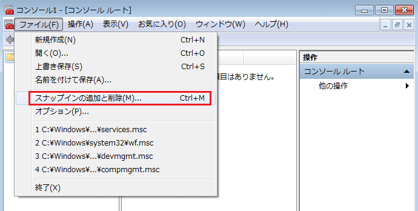
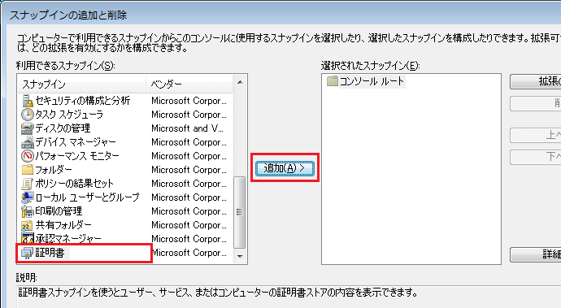
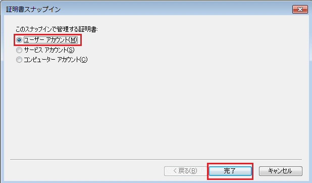
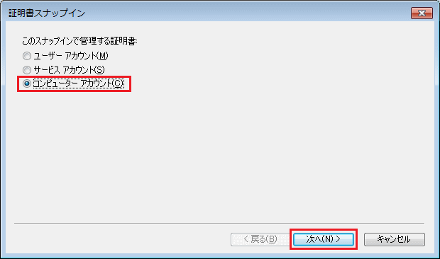
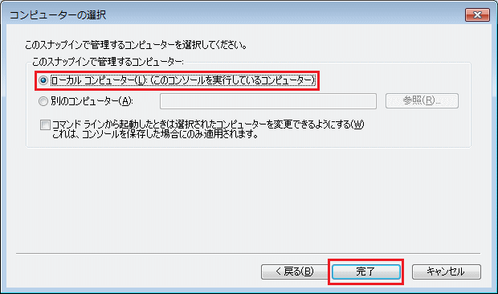
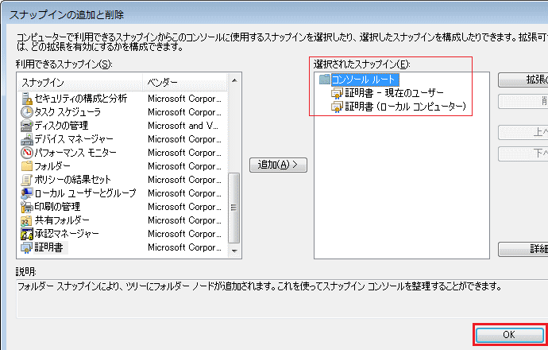
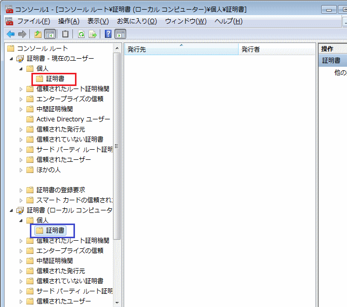
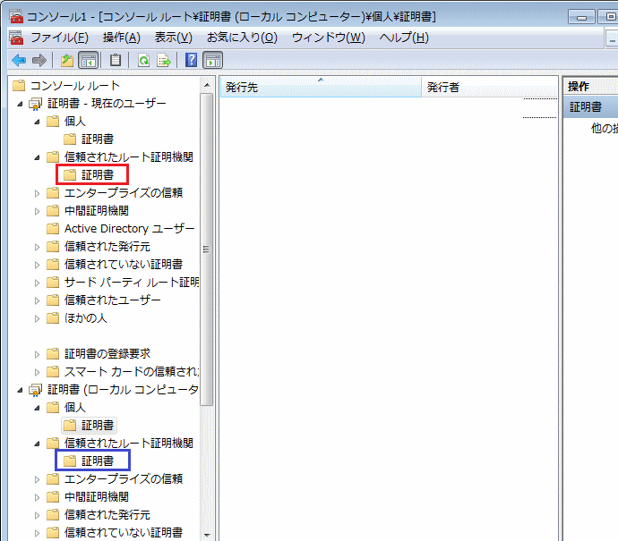

SSL - Client Certificate
クライアント証明書とは
クライアント証明書は、接続元であるクライアントPCが本物であるかどうかを確認する証明書です。 一方、サーバ証明書は、接続先であるWebサーバが本物であるかどうか確認するための証明書です。 クライアント証明書はクライアント側にインストールして、サーバ証明書はサーバ側にインストール します。この内容は、IEEE802.1XのEAP-TLS認証でも、SSL-VPNでの証明書認証でも適用できます。
クライアント証明書の種類 - Microsoftにおいて
クライアント証明書といっても、正確にはコンピュータ証明書とユーザー証明書の大きく2種類があります。 802.1XのEAP-TLSでは、デバイス認証という点でコンピュータ証明書をクライアントPCにインストールし、 SSL-VPNの証明書認証を行う場合にはユーザ―証明書をクライアントPCにインストールします。※1、※2。
クライアント証明書の利用例
| クライアント証明書 | 一般的な使用例 |
|---|---|
| コンピュータ証明書 | 802.1XのEAP-TLS認証 |
| ユーザー証明書 | SSL-VPNの証明書認証 |
※1 Cisco ASAをSSL-VPNサーバにして、Cisco AnyConnectをインストールしたPCがSSL-VPNを行う際に社内のWindows CAが 証明書を発行した証明書認証の場合、コンピュータ証明書であってもユーザー証明書であっても認証は成功します。Cisco ASAは クライアント証明書が「署名されたものであるか」と「失効していないかどうか」の2つだけを見て認証における正当性を見ているから。
※2 EAP-TLS認証では、コンピュータ証明書ではなくユーザー証明書を使用することも可能。IEEEで定義しているEAP-TLSでは クライアント証明書を使用することを定義しており、コンピュータ証明書やユーザー証明書のどちらか指定している訳ではないです。
以下で紹介する内容はWindows OSに適用できる内容となります。クライアント証明書を確認するこの手順は Windows 7 でのキャプチャー結果です。以下の手順により自身のクライアントPCにインストールされている コンピュータ証明書とユーザー証明書を確認できるので、個人PCや会社PCで確認してみましょう。 ※ インストールされている証明書は削除しないよう注意して下さい。あくまでも確認するだけにしましょう。
クライアント証明書の確認方法
ユーザー証明書とコンピュータ証明書は以下の手順で確認できる。先ずコマンドプロンプトでmmcと入力。 表示される以下の画面から、「ファイル」→「スナップインの追加と削除」を選択します。

利用できるスナップインの一番下の「証明書」を選択して、「追加」を選択します。

自身のクライアントPCにあるユーザー証明書を確認したい場合、以下の通り「ユーザーアカウント」を選択。

次に、コンピュータ証明書も確認したいので、同じ手順で以下の画面まで行き「コンピューターアカウント」 を選択します。そして、次の画面で「ローカルコンピューター（L）: ・・」を選択して、「完了」とします。


そうすると、ユーザー証明書とコンピュータ証明書が確認できる状態になるので、「OK」を選択します。

そうすると、以下の画面が表示されます。各証明書は赤枠と青枠部分で確認することができます。

赤枠部分で確認できる証明書はユーザー証明書。青枠部分で確認できる証明書はコンピュータ証明書。 SSL-VPNで証明書認証を行っている場合、ユーザー証明書またはコンピューター証明書がインストール されていることをここで確認できます。802.1XのEAP-TLS認証を行っている場合、コンピュータ証明書 がインストールされていることを確認できると思います。クライアント証明書の基本的な説明は以上です。 ※ この証明書確認の画面を閉じる際の「 コンソール1に保存しますか 」では「 いいえ（N）」を選択。
参考 ： CAのルート証明書の確認方法と配布方法
一方、CA証明書については「信頼されたルート証明機関」→「証明書」のところで確認することができます。 例えば、 IEEE802.1X認証での事前のセットアップ（ローカルアクセス）でWindowsドメインに参加できる クライアントPCは、CAのルート証明書とコンピュータ証明書をドメイン参加時に自動的に取得することも可。
※ Windows Server Active Directoryのセキュリティポリシーで証明書配布にチェックしていることが前提。 ※ Windows Server から配布されるコンピュータ証明書は、ホスト名＋ドメイン名のFQDN値となっている。

※ 信頼されたルート証明機関の「証明書」には、デフォルトで同じルートCAの証明書がインストールされています。
ということで、IEEE802.1XのEAP-TLSでは、CAのルート証明書やコンピュータ証明書をクライアント側で インストールすることは意識したことがないと思います。同じように、SSL-VPNで証明書認証を行う際には、 社内ネットワークでWindows AD 証明書サービスが有効ならば、そのドメインに参加可能なクライアントは ルートのCA証明書は自動取得が可能なので、あとは、ユーザー証明書をインポートすれば良いだけとなります。